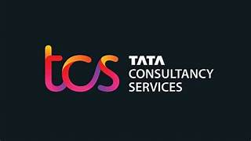

Tata Consultancy Services (TCS) is one of the largest information technology companies in the world. It is an Indian multinational company that provides IT services, consulting and business solutions. TCS helps many organizations to improve their technology systems and digital services.
The company is a part of the Tata Group which is a very famous and trusted business group in India. TCS has built a strong reputation in the global technology industry.
TCS was founded in the year 1968 as a division of Tata Sons. It started as a small IT service provider but later became one of the biggest technology companies in the world. Over the years, the company expanded its services to many countries and industries.
Today TCS is known for innovation, digital transformation and providing advanced software solutions to businesses.
Founded: 1968
Founder Organization: Tata Group
Headquarters: Mumbai, Maharashtra, India
CEO: K. Krithivasan
Employees: More than 600,000 employees worldwide
TCS operates in more than 50 countries and has offices in North America, Europe, Asia and Australia. The company works with many large international companies in banking, healthcare, retail, telecommunications and other industries.

This is the logo of Tata Consultancy Services. The company is widely recognized in the global IT industry and continues to grow every year.
back